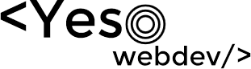

<!DOCTYPE html><html lang="es"></html><head><meta charset="UTF-8"/><title>Yeso Webdev</title><link rel="stylesheet" href="css/estilos.css"/><meta name="viewport" content="initial-scale=1, maximum-scale=1"/></head><body><nav class="Sidebar"><ul class="Sidebar-nav"><li class="Sidebar-nav-list">Inicio</li><li class="Sidebar-nav-list">Portafolio </li><li class="Sidebar-nav-list">Blog</li><li class="Sidebar-nav-list">Contacto</li></ul></nav><main class="main"><h2>Yesid Ghisays</h2><h3>Desarrollador Frontend</h3><section class="main-section"><article class="main-section-article"><p class="section-article-text">Hola ! Soy Yesid (@yesox126) un entusiasta estudiante de platzi y desarrollador frontend |freelancer, que le encanta diseñar y codear webpages y webapps, puedo hacer paginas de alto rendimiento y |aplicaciones optimizadas para funcionar apropiadamente en cualquier dispositivo/navegador, diseño responsive |para acomodar el contenido a dispositivos moviles e inclusive smart tvs, diseño plano o realista dentro de la |fecha limite del proyecto. </p></article><article class="main-section-article"><p class="section-article-text">Mi meta es cumplir y sobrepasar los requisitos del cliente usando las tecnologias mas |modernas disponibles en el mercado, manteniendo retrocompatibilidad con plataformas mas estandarizadas. </p></article></section></main></body><script src="js/script.js"></script>